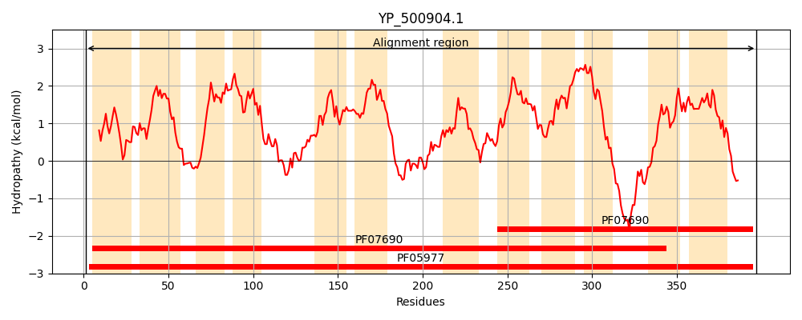
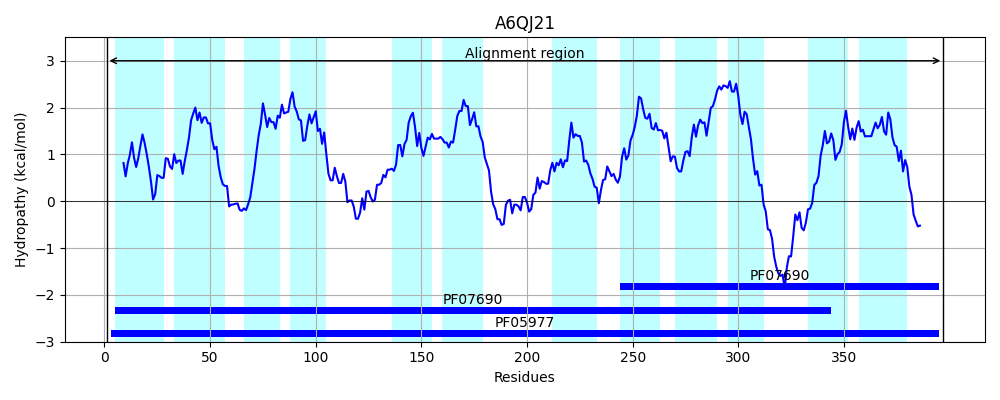
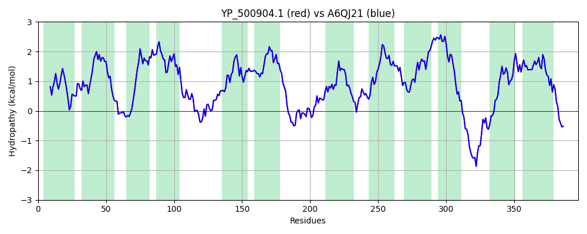

Hit Accession: A6QJ21
Hit TCID: 2.A.1.21.7
Hit Description: gnl|BL_ORD_ID|625 gnl|TC-DB|A6QJ21|2.A.1.21.7 Putative uncharacterized protein OS=Staphylococcus aureus (strain Newman) GN=NWMN_2081 PE=4 SV=1
Mach Len: 397
e:0.000000
Query TMS Count : 12
Hit TMS Count: 12
TMS-Overlap Score: 12.500000
Predicted Substrates:CHEBI:84711;staphyloferrin A, CHEBI:25106;macrolide
BLAST Alignment:
Score: 2016 , Bit scores: 781 bits, E-value: 0.0e+00, Alignment length: 397, Percentage identity: 100
Query: 1 MTKYFFSSSFLLFLGNWIGQIGLNWFVLTTYHNAVYLGIVNFCRLVPILLLSVWAGAIADKYDKGRLLRITISSSFLVTAILCVLTYSFTAIPISVIIIYATLRGILSAVETPLRQAILPDLSDKISTTQAVSFHSFIINICRSIGPAIAGVILAVYHAPTTFLAQAICYFIAVLLCLPLHFKVTKIPEDASRYMPLKVIIDYFKLHMEGRQIFITSLLIMATGFSYTTLLPVLTNKVFPGKSEIFGIAMTMCAIGGIIATLVLPKVLKYIGMVNMYYLSSFLFGIALLGVVFHNIVIMFICITLIGLFSQWARTTNRVYFQNNVKDYERGKVLSIIMMDRGMIPLGSLLMSICADVFGIVRTFSIMGISTICITMVFYFINRKLKLKLEESNHGIS 397
MTKYFFSSSFLLFLGNWIGQIGLNWFVLTTYHNAVYLGIVNFCRLVPILLLSVWAGAIADKYDKGRLLRITISSSFLVTAILCVLTYSFTAIPISVIIIYATLRGILSAVETPLRQAILPDLSDKISTTQAVSFHSFIINICRSIGPAIAGVILAVYHAPTTFLAQAICYFIAVLLCLPLHFKVTKIPEDASRYMPLKVIIDYFKLHMEGRQIFITSLLIMATGFSYTTLLPVLTNKVFPGKSEIFGIAMTMCAIGGIIATLVLPKVLKYIGMVNMYYLSSFLFGIALLGVVFHNIVIMFICITLIGLFSQWARTTNRVYFQNNVKDYERGKVLSIIMMDRGMIPLGSLLMSICADVFGIVRTFSIMGISTICITMVFYFINRKLKLKLEESNHGIS
Sbjct: 1 MTKYFFSSSFLLFLGNWIGQIGLNWFVLTTYHNAVYLGIVNFCRLVPILLLSVWAGAIADKYDKGRLLRITISSSFLVTAILCVLTYSFTAIPISVIIIYATLRGILSAVETPLRQAILPDLSDKISTTQAVSFHSFIINICRSIGPAIAGVILAVYHAPTTFLAQAICYFIAVLLCLPLHFKVTKIPEDASRYMPLKVIIDYFKLHMEGRQIFITSLLIMATGFSYTTLLPVLTNKVFPGKSEIFGIAMTMCAIGGIIATLVLPKVLKYIGMVNMYYLSSFLFGIALLGVVFHNIVIMFICITLIGLFSQWARTTNRVYFQNNVKDYERGKVLSIIMMDRGMIPLGSLLMSICADVFGIVRTFSIMGISTICITMVFYFINRKLKLKLEESNHGIS 397 | Protein Hydropathy Plots: |
|---|
|  |  |
Pairwise Alignment-Hydropathy Plot:
|
|---|
|  |